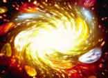

Alright, so accidents happen. But the accident that happened today is a rather awful one. Scientists triggered the end of the Universe. By mistake, that is.
It was all supposed to be under control. Sure, in the 1990s, there were some oddball scientists who gave off warnings that things might one day go terribly wrong at the lab. But no-one really cared.
Unfortunately, the oddballs were right. Today, during an experiment in high-energy physics, the inconceivable happened. The experiment triggered what scientists call a quantum vacuum collapse. And one second later, the dreaded phenomenon has wiped out all matter on the planet. The world with everything and everyone on it has simply ceased to exist.
But that's not all. Traveling at the speed of light, a huge wave of destruction sets out from where the Earth used to be. Like the shockwave of a bomb exploding, it flings off into all directions. And everywhere it passes, it brings about mayhem and destruction. Voom! -- there goes the Moon. Slam! -- that was the Sun. Spat! -- Mars, Jupiter, Pluto; all gone. The shockwave never stops. It will expand and expand. And expand, until every molecule in the Universe is dead.
So, what exactly is going on? The answer takes you to the heart of quantum physics: the chunk of science that deals with the tiny particles that make up everything in the Universe. Quantum theory predicts that the Universe is filled with so-called vacuum energy -- which is the average energy of all those zillions of particles that pop into and out of existence everywhere around us each moment. As the Universe expanded, the vacuum energy dropped down to the lowest possible level. Well, in theory, that is.
There is, however, a small possibility that the theory is wrong. The Universe may be still `hung up' in an unstable energetic state. If so, a fierce jolt of energy in just the right place may be exactly what it takes to tip the balance. It would be like putting a needle into a balloon. Within a fraction of a second, a HUGE blast of energy will set free, as the quantum vacuum plunges into a lower energetic state.
The destructive energy that is unleashed will be quite different from everything we know. Literally every atom in our part of the cosmos will spew out energy. You can't even BEGIN to imagine the bizarre consequences this would have. For one thing, ordinary matter will become unstable and cease to exist.
So what would spark off the collapse? Well: particle accelerators, for example. In a particle accelerator, science smashes all kinds of tiny particles into each other to learn more about matter and the Universe. Now that's neat -- but according to critics, there's a real possibility such collisions may yield enough energy to push the Universe off balance. `The Universe can be blown to smithereens', as one of them (Paul Dixon) cosily put it in 1998.
If you find all this hard to understand, don't worry. Even specialized physicists don't fully understand how the quantum vacuum works. So their line of reasoning is simple: everywhere in the Universe, all kinds of atoms, molecules and particles slam into each other constantly. So if the quantum vacuum indeed were unstable, it would have had plenty of opportunity to collapse already. Simply put: the Universe cannot be a barrel of gunpowder, since nature constantly throws all kinds of burning fuses into it.
Phew, that indeed seems reassuring. On the other hand: as some physicists have pointed out, there is also a possibility nature simply hasn't found the right fuse yet. And here on Earth, we're experimenting with all kinds of new fuses -- for example, we're doing and planning particle accelerator experiments with rare elements such as gold and with elements that are so unstable they don't exist in `real' nature.
What's more, accidents happen. And the bigger the science, the bigger the accidents. So please, dear physicists. If you read this, please be a little careful.
 |
 |